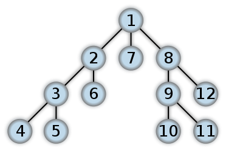
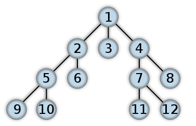
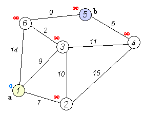

Графы. Разные виды представления графов. Пути в лабиринте. Выход из лабиринта (поиск в глубину). Кратчайший путь (поиск в ширину). Алгоритмы на графах. Алгоритмы Дейкстры и Флойда. Примеры задач. Алгоритмы на графах: Флойда, Дейкстры, Краскала
Раскрашивание графов
Раскраска графа — присвоение цветов вершинам так, чтобы концы каждого ребра имели разные цвета. Наименьшее число цветов, при котором раскраска возможна, называют хроматическим числом $\chi(G)$. Точно найти $\chi(G)$ трудно: задача NP-трудна. Поэтому на практике используют простые жадные методы.
Жадная раскраска в заданном порядке. Вершины обходятся в заданном порядке $v_1, v_2, \dots, v_n$. Каждая вершина получает наименьший номер цвета (цвета нумеруются с 1), который не занят её уже окрашенными соседями. Результат всегда является правильной раскраской, но число цветов зависит от порядка. Например, в пути из четырёх вершин 0–1–2–3 порядок $0, 1, 2, 3$ даёт цвета $1, 2, 1, 2$, а порядок $0, 3, 1, 2$ даёт цвета $1, 2, 3, 1$: вершина 2 получает цвет 3, потому что её соседи окрашены в цвета 2 и 1.
Оценка числа цветов. Жадная раскраска использует не более $\Delta + 1$ цвета, где $\Delta$ — максимальная степень вершины. Действительно, когда очередь доходит до вершины $v$, у неё не более $\deg v \le \Delta$ соседей, поэтому они заняли не более $\Delta$ цветов, и один из цветов $1, 2, \dots, \Delta + 1$ свободен. Оценка точна для полного графа $K_n$: там $\Delta = n - 1$, и каждой вершине нужен свой цвет.
Программа красит путь 0–1–2–3 при двух порядках вершин и печатает цвета вершин.
Реализация на Pascal
program GreedyColouring;
{ Жадная раскраска вершин в заданном порядке: O(V + E) }
const
MaxN = 10; { Максимальное число вершин }
var
vertexCount: integer;
adjCount: array [0..MaxN - 1] of integer; { Число соседей вершины }
adjTo: array [0..MaxN - 1, 0..MaxN - 1] of integer; { Соседи вершины }
order: array [0..MaxN - 1] of integer; { Порядок, в котором вершины получают цвета }
colour: array [0..MaxN - 1] of integer; { Цвет вершины; 0 — вершина не окрашена }
taken: array [0..MaxN] of boolean; { Цвет уже занят соседом }
{ Начинает граф с n вершинами и без рёбер }
procedure NewGraph(n: integer);
var
v: integer;
begin
vertexCount := n;
for v := 0 to n - 1 do
adjCount[v] := 0;
end;
{ Добавляет ребро (u, v) в обе стороны }
procedure AddEdge(u, v: integer);
begin
adjTo[u, adjCount[u]] := v;
adjCount[u] := adjCount[u] + 1;
adjTo[v, adjCount[v]] := u;
adjCount[v] := adjCount[v] + 1;
end;
{ Красит вершины в порядке order; цвета нумеруются с 1 }
procedure GreedyColour;
var
k, v, j, c: integer;
begin
for v := 0 to vertexCount - 1 do
colour[v] := 0;
for c := 0 to MaxN do
taken[c] := false;
for k := 0 to vertexCount - 1 do
begin
v := order[k];
{ Отмечаем цвета уже окрашенных соседей }
for j := 0 to adjCount[v] - 1 do
taken[colour[adjTo[v, j]]] := true;
{ Берём наименьший цвет, которого нет у соседей }
c := 1;
while taken[c] do
c := c + 1;
colour[v] := c;
{ Снимаем отметки, чтобы массив был пуст для следующей вершины }
for j := 0 to adjCount[v] - 1 do
taken[colour[adjTo[v, j]]] := false;
end;
end;
{ Выводит цвета всех вершин через пробел }
procedure PrintColours;
var
v: integer;
begin
for v := 0 to vertexCount - 1 do
write(' ', colour[v]);
writeln;
end;
begin
NewGraph(4); { Путь 0-1-2-3 }
AddEdge(0, 1);
AddEdge(1, 2);
AddEdge(2, 3);
order[0] := 0;
order[1] := 1;
order[2] := 2;
order[3] := 3;
GreedyColour;
write('порядок 0 1 2 3: цвета');
PrintColours;
order[0] := 0;
order[1] := 3;
order[2] := 1;
order[3] := 2;
GreedyColour;
write('порядок 0 3 1 2: цвета');
PrintColours;
end.
Реализация на Python
# Жадная раскраска вершин в заданном порядке: O(V + E)
def greedy_colouring(adjacency, order):
"""Возвращает цвет каждой вершины (цвета нумеруются с 1) при жадной раскраске в порядке order.
adjacency[v] — список соседей вершины v; петель быть не должно. Цвет 0 означает «не окрашена».
"""
colour = [0] * len(adjacency)
for v in order:
# Цвета уже окрашенных соседей; цвет 0 (не окрашен) не совпадает с искомым c >= 1
taken = {colour[u] for u in adjacency[v]}
c = 1
while c in taken:
c += 1
colour[v] = c
return colour
if __name__ == "__main__":
# Демонстрация: путь 0-1-2-3 при двух порядках вершин
adjacency = [[1], [0, 2], [1, 3], [2]]
print("порядок 0 1 2 3: цвета", *greedy_colouring(adjacency, [0, 1, 2, 3]))
print("порядок 0 3 1 2: цвета", *greedy_colouring(adjacency, [0, 3, 1, 2]))
Реализация на Rust
// Жадная раскраска вершин в заданном порядке: O(V + E)
/// Возвращает цвет каждой вершины (цвета с 1); 0 означает, что вершина не окрашена.
/// adjacency[v] — соседи вершины v, order — порядок, в котором вершины получают цвета.
pub fn greedy_colouring(adjacency: &[Vec<usize>], order: &[usize]) -> Vec<usize> {
let mut colour = vec![0; adjacency.len()];
let mut taken = vec![false; adjacency.len() + 2]; // taken[c] — цвет c занят соседом
for &v in order {
for &u in &adjacency[v] {
taken[colour[u]] = true;
}
let mut c = 1;
while taken[c] {
c += 1;
}
colour[v] = c;
for &u in &adjacency[v] {
taken[colour[u]] = false; // Снимаем отметки
}
}
colour
}
/// Строка из чисел через пробел
fn line(values: &[usize]) -> String {
values.iter().map(|v| v.to_string()).collect::<Vec<_>>().join(" ")
}
fn main() {
// Демонстрация: путь 0-1-2-3 при двух порядках вершин
let adjacency: Vec<Vec<usize>> = vec![vec![1], vec![0, 2], vec![1, 3], vec![2]];
println!("порядок 0 1 2 3: цвета {}", line(&greedy_colouring(&adjacency, &[0, 1, 2, 3])));
println!("порядок 0 3 1 2: цвета {}", line(&greedy_colouring(&adjacency, &[0, 3, 1, 2])));
}
Реализация на C++
// Жадная раскраска вершин в заданном порядке: O(V + E)
#include <iostream>
#include <vector>
// Возвращает цвет каждой вершины (цвета нумеруются с 1); 0 означает, что вершина не окрашена.
// adjacency[v] — соседи вершины v, order — порядок, в котором вершины получают цвета
std::vector<int> greedy_colouring(const std::vector<std::vector<int>>& adjacency, const std::vector<int>& order) {
std::vector<int> colour(adjacency.size(), 0);
std::vector<bool> taken(adjacency.size() + 2, false); // taken[c] — цвет c занят соседом
for (const int v : order) {
for (const int u : adjacency[v]) taken[colour[u]] = true;
int c = 1;
while (taken[c]) ++c;
colour[v] = c;
for (const int u : adjacency[v]) taken[colour[u]] = false; // Снимаем отметки
}
return colour;
}
int main() {
// Демонстрация: путь 0-1-2-3 при двух порядках вершин
const std::vector<std::vector<int>> adjacency = {{1}, {0, 2}, {1, 3}, {2}};
std::cout << "порядок 0 1 2 3: цвета";
for (const int c : greedy_colouring(adjacency, {0, 1, 2, 3})) std::cout << ' ' << c;
std::cout << '\n';
std::cout << "порядок 0 3 1 2: цвета";
for (const int c : greedy_colouring(adjacency, {0, 3, 1, 2})) std::cout << ' ' << c;
std::cout << '\n';
return 0;
}
Проверка двудольности поиском в ширину. Граф называют двудольным, если его вершины можно раскрасить в два цвета так, что каждое ребро соединяет вершины разных цветов. Это возможно тогда и только тогда, когда в графе нет циклов нечётной длины. Проверка выполняется поиском в ширину: каждая компонента связности обходится из одной вершины, которая получает цвет 0, а каждый её сосед получает противоположный цвет. Если при обходе ребро соединяет две вершины одного цвета, граф не двудольный. Иначе каждое ребро проверено и соединяет вершины разных цветов. Время работы $O(V + E)$.
Программа проверяет граф из четырёхугольника и отдельного ребра, а затем треугольник.
Реализация на Pascal
program BipartiteCheck;
{ Проверка двудольности графа поиском в ширину: O(V + E) }
const
MaxN = 10; { Максимальное число вершин }
var
vertexCount, v: integer;
adjCount: array [0..MaxN - 1] of integer; { Число соседей вершины }
adjTo: array [0..MaxN - 1, 0..MaxN - 1] of integer; { Соседи вершины }
colour: array [0..MaxN - 1] of integer; { -1 — вершина не окрашена, иначе 0 или 1 }
queue: array [0..MaxN - 1] of integer; { Очередь вершин }
{ Начинает граф с n вершинами и без рёбер }
procedure NewGraph(n: integer);
var
u: integer;
begin
vertexCount := n;
for u := 0 to n - 1 do
adjCount[u] := 0;
end;
{ Добавляет ребро (u, w) в обе стороны }
procedure AddEdge(u, w: integer);
begin
adjTo[u, adjCount[u]] := w;
adjCount[u] := adjCount[u] + 1;
adjTo[w, adjCount[w]] := u;
adjCount[w] := adjCount[w] + 1;
end;
{ Истинно, если граф двудолен; тогда colour содержит двуцветную раскраску }
function IsBipartite: boolean;
var
s, head, tail, x, y, k: integer;
ok: boolean;
begin
for x := 0 to vertexCount - 1 do
colour[x] := -1;
ok := true;
s := 0;
while ok and (s < vertexCount) do
begin
if colour[s] = -1 then
begin
{ Новая компонента связности: обходим её поиском в ширину из вершины s }
colour[s] := 0;
head := 0;
tail := 0;
queue[tail] := s;
tail := tail + 1;
while ok and (head < tail) do
begin
x := queue[head];
head := head + 1;
for k := 0 to adjCount[x] - 1 do
begin
y := adjTo[x, k];
if colour[y] = -1 then
begin
colour[y] := 1 - colour[x]; { Сосед получает противоположный цвет }
queue[tail] := y;
tail := tail + 1;
end
else if colour[y] = colour[x] then
ok := false; { Ребро между вершинами одного цвета: есть нечётный цикл }
end;
end;
end;
s := s + 1;
end;
IsBipartite := ok;
end;
begin
NewGraph(6); { Четырёхугольник 0-1-2-3 и ребро 4-5 }
AddEdge(0, 1);
AddEdge(1, 2);
AddEdge(2, 3);
AddEdge(3, 0);
AddEdge(4, 5);
write('четырёхугольник и ребро:');
if IsBipartite then
begin
write(' да, цвета');
for v := 0 to vertexCount - 1 do
write(' ', colour[v]);
writeln;
end
else
writeln(' нет');
NewGraph(3); { Треугольник 0-1-2 }
AddEdge(0, 1);
AddEdge(1, 2);
AddEdge(2, 0);
write('треугольник:');
if IsBipartite then
writeln(' да')
else
writeln(' нет');
end.
Реализация на Python
# Проверка двудольности поиском в ширину: O(V + E)
from collections import deque
def bipartite_colouring(adjacency):
"""Возвращает двуцветную раскраску (список из 0 и 1) или None, если граф не двудолен.
adjacency[v] — список соседей вершины v. Граф может быть несвязным.
"""
colour = [-1] * len(adjacency) # -1 — вершина ещё не окрашена
for start in range(len(adjacency)):
if colour[start] != -1:
continue
colour[start] = 0
queue = deque([start])
while queue:
v = queue.popleft()
for u in adjacency[v]:
if colour[u] == -1:
colour[u] = 1 - colour[v] # Сосед получает противоположный цвет
queue.append(u)
elif colour[u] == colour[v]:
return None # Ребро между вершинами одного цвета: есть нечётный цикл
return colour
if __name__ == "__main__":
# Демонстрация: четырёхугольник 0-1-2-3 и ребро 4-5; треугольник 0-1-2
square_and_edge = [[1, 3], [0, 2], [1, 3], [2, 0], [5], [4]]
colour = bipartite_colouring(square_and_edge)
if colour is None:
print("четырёхугольник и ребро: нет")
else:
print("четырёхугольник и ребро: да, цвета", *colour)
triangle = [[1, 2], [0, 2], [0, 1]]
print("треугольник:", "нет" if bipartite_colouring(triangle) is None else "да")
Реализация на Rust
// Проверка двудольности поиском в ширину: O(V + E)
use std::collections::VecDeque;
/// Возвращает двуцветную раскраску (цвета 0 и 1) или None, если граф не двудолен.
pub fn bipartite_colouring(adjacency: &[Vec<usize>]) -> Option<Vec<i32>> {
let mut colour = vec![-1; adjacency.len()]; // -1 — вершина ещё не окрашена
for start in 0..adjacency.len() {
if colour[start] != -1 {
continue;
}
colour[start] = 0;
let mut pending = VecDeque::from([start]);
while let Some(v) = pending.pop_front() {
for &u in &adjacency[v] {
if colour[u] == -1 {
colour[u] = 1 - colour[v]; // Сосед получает противоположный цвет
pending.push_back(u);
} else if colour[u] == colour[v] {
return None; // Ребро между вершинами одного цвета: есть нечётный цикл
}
}
}
}
Some(colour)
}
/// Строка из чисел через пробел
fn line(values: &[i32]) -> String {
values.iter().map(|v| v.to_string()).collect::<Vec<_>>().join(" ")
}
fn main() {
// Демонстрация: четырёхугольник 0-1-2-3 и ребро 4-5; треугольник 0-1-2
let square_and_edge: Vec<Vec<usize>> = vec![vec![1, 3], vec![0, 2], vec![1, 3], vec![2, 0], vec![5], vec![4]];
match bipartite_colouring(&square_and_edge) {
Some(colour) => println!("четырёхугольник и ребро: да, цвета {}", line(&colour)),
None => println!("четырёхугольник и ребро: нет"),
}
let triangle: Vec<Vec<usize>> = vec![vec![1, 2], vec![0, 2], vec![0, 1]];
let answer = if bipartite_colouring(&triangle).is_some() { "да" } else { "нет" };
println!("треугольник: {}", answer);
}
Реализация на C++
// Проверка двудольности поиском в ширину: O(V + E)
#include <iostream>
#include <optional>
#include <queue>
#include <vector>
// Возвращает двуцветную раскраску (цвета 0 и 1) или std::nullopt, если граф не двудолен
std::optional<std::vector<int>> bipartite_colouring(const std::vector<std::vector<int>>& adjacency) {
const int n = static_cast<int>(adjacency.size());
std::vector<int> colour(adjacency.size(), -1); // -1 — вершина ещё не окрашена
for (int start = 0; start < n; ++start) {
if (colour[start] != -1) continue;
colour[start] = 0;
std::queue<int> pending;
pending.push(start);
while (!pending.empty()) {
const int v = pending.front();
pending.pop();
for (const int u : adjacency[v]) {
if (colour[u] == -1) {
colour[u] = 1 - colour[v]; // Сосед получает противоположный цвет
pending.push(u);
} else if (colour[u] == colour[v]) {
return std::nullopt; // Ребро между вершинами одного цвета: есть нечётный цикл
}
}
}
}
return colour;
}
int main() {
// Демонстрация: четырёхугольник 0-1-2-3 и ребро 4-5; треугольник 0-1-2
const std::vector<std::vector<int>> square_and_edge = {{1, 3}, {0, 2}, {1, 3}, {2, 0}, {5}, {4}};
std::cout << "четырёхугольник и ребро:";
if (const auto colour = bipartite_colouring(square_and_edge)) {
std::cout << " да, цвета";
for (const int c : *colour) std::cout << ' ' << c;
std::cout << '\n';
} else {
std::cout << " нет\n";
}
const std::vector<std::vector<int>> triangle = {{1, 2}, {0, 2}, {0, 1}};
std::cout << "треугольник: " << (bipartite_colouring(triangle) ? "да" : "нет") << '\n';
return 0;
}
Обход вершин графа
Обход графа из 7 вершин: выберите вид обхода и начальную вершину. Очередь (поиск в ширину) и стек (поиск в глубину) показаны по шагам.
Поиск в глубину - ПВГ (Depth First Search - DFS)
Метод обхода графа при котором в первую очередь переход делается из последней посещённой вершины (вершины хранятся в стеке). Обход в глубину получается естественным образом при рекурсивном обходе графа.
Порядок обхода вершин при поиске в глубину

# Смежность вершин
inc = {
1: [2, 8],
2: [1, 3, 8],
3: [2, 4, 8],
4: [3, 7, 9],
5: [6, 7],
6: [5],
7: [4, 5, 8],
8: [1, 2, 3, 7],
9: [4],
}
visited = set() # Посещена ли вершина?
# Поиск в глубину - ПВГ (Depth First Search - DFS)
def dfs(v):
if v in visited: # Если вершина уже посещена, выходим
return
visited.add(v) # Посетили вершину v
for i in inc[v]: # Все смежные с v вершины
if not i in visited:
dfs(i)
start = 1
dfs(start) # start - начальная вершина обхода
print(visited)
const MaxN = 100; { Максимальное количество верщин }
var
A : array [1..MaxN, 1..MaxN] of boolean; { Матрица смежности (есть ли ребро из i в j) }
visited: array [1..MaxN] of boolean; { Посещена ли вершина? }
start: integer; { Начальная вершина обхода }
{ Поиск в глубину - ПВГ (Depth First Search - DFS) }
procedure dfs(v: integer);
var i: integer;
begin
visited[v] := true;
for i := 1 to MaxN do
if A[v, i] and not visited[i] then
dfs(i);
end;
begin
start := 1;
dfs(start); { start - начальная вершина обхода }
end.
Реализация на Rust
// Поиск в глубину (DFS), рекурсивный обход графа: O(V + E)
/// Возвращает вершины в порядке обхода, начиная с source. Вершины нумеруются с 1, adjacency[0] не используется.
pub fn dfs(adjacency: &[Vec<usize>], source: usize) -> Vec<usize> {
let mut order = Vec::new();
if source == 0 || source >= adjacency.len() {
return order;
}
let mut visited = vec![false; adjacency.len()];
visit(adjacency, source, &mut visited, &mut order);
order
}
/// Посещает вершину v и рекурсивно обходит все смежные с ней непосещённые вершины.
fn visit(adjacency: &[Vec<usize>], v: usize, visited: &mut [bool], order: &mut Vec<usize>) {
if visited[v] {
return; // Если вершина уже посещена, выходим
}
visited[v] = true; // Посетили вершину v
order.push(v);
for &u in &adjacency[v] {
// Все смежные с v вершины
visit(adjacency, u, visited, order);
}
}
fn main() {
// Демонстрация: граф из 9 вершин, тот же, что на странице про DFS
let adjacency: Vec<Vec<usize>> = vec![
vec![], vec![2, 8], vec![1, 3, 8], vec![2, 4, 8], vec![3, 7, 9],
vec![6, 7], vec![5], vec![4, 5, 8], vec![1, 2, 3, 7], vec![4],
];
// Ожидаемый порядок обхода: 1 2 3 4 7 5 6 8 9
let line: Vec<String> = dfs(&adjacency, 1).iter().map(|v| v.to_string()).collect();
println!("{}", line.join(" "));
}
Реализация на C++
// Поиск в глубину (DFS), рекурсивный обход графа: O(V + E)
#include <cstddef>
#include <iostream>
#include <vector>
// Посещает вершину v и рекурсивно обходит все смежные с ней непосещённые вершины
void visit(const std::vector<std::vector<int>>& adjacency, int v, std::vector<bool>& visited,
std::vector<int>& order) {
if (visited[v]) return; // Если вершина уже посещена, выходим
visited[v] = true; // Посетили вершину v
order.push_back(v); // Запоминаем порядок обхода
for (const int u : adjacency[v]) { // Все смежные с v вершины
visit(adjacency, u, visited, order);
}
}
// Возвращает вершины в порядке обхода, начиная с source. Вершины нумеруются с 1, adjacency[0] не используется
std::vector<int> dfs(const std::vector<std::vector<int>>& adjacency, int source) {
std::vector<int> order;
if (source <= 0 || source >= static_cast<int>(adjacency.size())) return order;
std::vector<bool> visited(adjacency.size(), false);
visit(adjacency, source, visited, order);
return order;
}
int main() {
// Демонстрация: граф из 9 вершин, тот же, что на странице про DFS
const std::vector<std::vector<int>> adjacency = {
{}, {2, 8}, {1, 3, 8}, {2, 4, 8}, {3, 7, 9}, {6, 7}, {5}, {4, 5, 8}, {1, 2, 3, 7}, {4},
};
// Ожидаемый порядок обхода: 1 2 3 4 7 5 6 8 9
const std::vector<int> order = dfs(adjacency, 1);
for (std::size_t i = 0; i < order.size(); ++i) std::cout << (i ? " " : "") << order[i];
std::cout << '\n';
return 0;
}
Поиск в ширину - ПВШ (Breadth First Search - BFS)
Метод обхода графа при котором в первую очередь переход делается из первой вершины, из которой мы ещё не ходили (вершины хранятся в очереди). Обход в глубину получается естественным образов при рекурсивном обходе графа.
Порядок обхода вершин при поиске в ширину

Реализация на Python
# Алгоритм поиска в ширину (BFS), расстояния в рёбрах: O(V + E)
from collections import deque
def bfs(adjacency, source):
"""Возвращает порядок обхода вершин и число рёбер от source до каждой вершины (-1 — недостижима)."""
distance = [-1] * len(adjacency)
if not adjacency:
return [], distance
distance[source] = 0
order = []
queue = deque([source]) # Очередь вершин, которые ещё предстоит обработать
while queue:
v = queue.popleft()
order.append(v)
for u in adjacency[v]:
# Вершина u ещё не посещена: она на одно ребро дальше от source, чем v
if distance[u] == -1:
distance[u] = distance[v] + 1
queue.append(u)
return order, distance
if __name__ == "__main__":
# Демонстрация: граф из 9 вершин (нумерация с нуля), тот же, что на странице про DFS
adjacency = [
[1, 7], [0, 2, 7], [1, 3, 7], [2, 6, 8], [5, 6],
[4], [3, 4, 7], [0, 1, 2, 6], [3],
]
order, distance = bfs(adjacency, 0)
# Ожидаемый порядок обхода: [0, 1, 7, 2, 6, 3, 4, 8, 5]
print(order)
print(distance)
Реализация на Rust
// Алгоритм поиска в ширину (BFS), расстояния в рёбрах: O(V + E)
use std::collections::VecDeque;
/// Возвращает порядок обхода вершин и число рёбер от source до каждой вершины (-1 — недостижима).
pub fn bfs(adjacency: &[Vec<usize>], source: usize) -> (Vec<usize>, Vec<i64>) {
let mut distance = vec![-1; adjacency.len()];
let mut order = Vec::new();
if adjacency.is_empty() {
return (order, distance);
}
distance[source] = 0;
let mut pending = VecDeque::from([source]); // Очередь вершин, которые ещё предстоит обработать
while let Some(v) = pending.pop_front() {
order.push(v);
for &u in &adjacency[v] {
// Вершина u ещё не посещена: она на одно ребро дальше от source, чем v
if distance[u] == -1 {
distance[u] = distance[v] + 1;
pending.push_back(u);
}
}
}
(order, distance)
}
fn main() {
// Демонстрация: граф из 9 вершин (нумерация с нуля), тот же, что в Python-версии
let adjacency: Vec<Vec<usize>> = vec![
vec![1, 7], vec![0, 2, 7], vec![1, 3, 7], vec![2, 6, 8], vec![5, 6],
vec![4], vec![3, 4, 7], vec![0, 1, 2, 6], vec![3],
];
let (order, distance) = bfs(&adjacency, 0);
// Ожидаемый порядок обхода: 0 1 7 2 6 3 4 8 5
let order_line: Vec<String> = order.iter().map(|v| v.to_string()).collect();
println!("{}", order_line.join(" "));
// Ожидаемые расстояния: 0 1 2 3 3 4 2 1 4
let distance_line: Vec<String> = distance.iter().map(|d| d.to_string()).collect();
println!("{}", distance_line.join(" "));
}
Реализация на C++
// Алгоритм поиска в ширину (BFS), расстояния в рёбрах: O(V + E)
#include <cstddef>
#include <iostream>
#include <queue>
#include <utility>
#include <vector>
// Возвращает порядок обхода вершин и число рёбер от source до каждой вершины (-1 — недостижима)
std::pair<std::vector<int>, std::vector<int>> bfs(const std::vector<std::vector<int>>& adjacency, int source) {
std::vector<int> distance(adjacency.size(), -1);
std::vector<int> order;
if (adjacency.empty()) return {order, distance};
distance[source] = 0;
std::queue<int> pending; // Очередь вершин, которые ещё предстоит обработать
pending.push(source);
while (!pending.empty()) {
const int v = pending.front();
pending.pop();
order.push_back(v);
for (const int u : adjacency[v]) {
// Вершина u ещё не посещена: она на одно ребро дальше от source, чем v
if (distance[u] == -1) {
distance[u] = distance[v] + 1;
pending.push(u);
}
}
}
return {order, distance};
}
int main() {
// Демонстрация: граф из 9 вершин (нумерация с нуля), тот же, что в Python-версии
const std::vector<std::vector<int>> adjacency = {
{1, 7}, {0, 2, 7}, {1, 3, 7}, {2, 6, 8}, {5, 6}, {4}, {3, 4, 7}, {0, 1, 2, 6}, {3},
};
const auto [order, distance] = bfs(adjacency, 0);
// Ожидаемый порядок обхода: 0 1 7 2 6 3 4 8 5
for (const int v : order) std::cout << v << ' ';
std::cout << '\n';
// Ожидаемые расстояния: 0 1 2 3 3 4 2 1 4
for (const int d : distance) std::cout << d << ' ';
std::cout << '\n';
return 0;
}
Поиск кратчайших путей в графах (объединение разделов по Дейкстре и Флойду)
Алгоритм Дейкстры
Алгоритм Дейкстры (Dijkstra’s algorithm) — алгоритм на графах, находящий кратчайшее расстояние от одной из вершин графа до всех остальных. Алгоритм работает только для графов без рёбер отрицательного веса (без рёбер с отрицательной "длиной").
Примеры формулировки задачиВариант 1. Дана сеть автомобильных дорог, соединяющих города. Некоторые дороги односторонние. Найти кратчайшие пути от заданного города до каждого другого города (если двигаться можно только по дорогам).
Вариант 2. Имеется некоторое количество авиарейсов между городами мира, для каждого известна стоимость. Стоимость перелёта из A в B может быть не равна стоимости перелёта из B в A. Найти маршрут минимальной стоимости (возможно, с пересадками) от Копенгагена до Барнаула.

Идея алгоритма Дейкстры
Алгоритм состоит и 2 повторяющихся шагов:
- Добавление новой вершины ("Расти" - GROW)
- "Релаксация", т.е. пересчёт расстояний до других вершин с учётом добавленной вершины (RELAX).
Более подробное описание:
Обозначения:
Граф $G = (V,E)$, где $V$ - вершины, $E$ - рёбра.
$v_0$ - начальная вершина (от которой мы ищем кратчайшее растояние до всех остальных)
$R_i$ - известное нам расстояние от вершиеы $v_0$ до вершины $i$-ой.
$D$ - множество вершин до которых мы знаем кратчайшее расстояние от $v_0$.
Граф $G=(V,E)$, где $V$ - вершины, $E$ - рёбра.
$v_0$ - начальная вершина
$R_i$ - кратчайщее расстояние от $v_0$ до $i$-ой вершины
$v=v_0$
$D = [v_0]$
Повторять
Инициализация алгоритма:
$D = \{\}$ - пустое множество.
$R_{v_0} = 0$ - расстояние от $v_0$ до $v_0$ = 0.
$v = v_0$ - расти будем от вершины $v$.
Повторять (общий шаг алгоритма)
$GROW(V/D,v)$ - Добавляем вершину $v$ из множества $V/D$ в множество $D$.
$RELAX(V/D,v)$ - пробегаем достижимые из $v$ вершины до которых мы ещё не знаем кратчайшее расстояние и обновляем расстояния $R_i$ от вершины $v$.
$v$ - вершина с минимальным $R$ из множества $V/D$.
Алгоритм
Каждой вершине v из V сопоставим значение a[v] — минимальное известное расстояние от этой вершины до начальной s. Алгоритм работает пошагово — на каждом шаге он рассматривает одну вершину и пытается улучшить текущее расстояние до этой вершины. Работа алгоритма завершается, когда все вершины посещены, либо когда вычислены расстояния до всех вершин, достижимых из начальной.
Инициализация. Значение a[s] самой начальной вершины полагается равным 0, значение остальных вершин — бесконечности (в программировании это реализуется присваиванием большого, к примеру, максимально возможного для данного типа, значения). Это отражает то, что расстояния от s до других вершин пока неизвестны.
Шаг алгоритма. Если все вершины посещены, алгоритм завершается. В противном случае, из ещё не посещённых вершин выбирается вершина v, имеющая минимальное расстояние от начальной вершины s и добавляется в список посещенных. Эта вершина находится, используя перебор всех непосещенных вершин. При этом суммируется расстояние от старта до одной из посещенных вершин u до непосещенной v. Для первого шага s - единственная посещенная вершина с расстоянием от старта (то есть от себя самой), равным 0.
const MaxN = 1000; { Максимальное количество вершин }
var
a : array [1..MaxN] of extended; { Найденные кратчайшие расстояния }
b : array [1..MaxN] of boolean; { Вычислено ли кратчайшее расстояние до вершины }
p : array [1..MaxN,1..MaxN] of extended; { Матрица смежности }
begin
{ До всех вершин расстояние - бесконечность }
for i := 1 to n do a[i] := Inf;
a[s] := 0.0; { И только до начальной вершины расстояние 0 }
for i := 1 to n do b[i] := false; { Ни до одной вершины мы ещё не нашли кратчайшее расстояние }
j := s; { Добавляемая вершина (стартовая) }
repeat
l := j;
b[l] := True; { Добавили вершину }
{ Оббегаем все вершины смежные с только что добавленной }
min := Inf; { Будем искать вершину с минимальным расстоянием от стартовой }
for i := 1 to n do
if not b[i] then begin
{ Если есть путь короче чем известный в i-ую вершину через l-тую, то запоминаем его }
if a[i] < a[l] + p[l][i] then a[i] := a[l] + p[l][i];
{ Если расстояние в эту вершину минимально, то запоминаем её как следующий кандидат на добавление }
if a[i] < min then begin min := a[i]; j := i; end;
end;
until min = Inf;
for i := 1 to n do
if a[i] >= Inf then
write('-1 ') { Вершины нельзя достичь из начальной }
else
write(a[i],' '); { Расстояние от начальной вершины = a[i] }
end;
Реализация на Python
# Алгоритм Дейкстры, кратчайшие пути из одной вершины: O((V + E) log V) с кучей heapq
import heapq
INF = float("inf")
def dijkstra(adjacency, source):
"""Возвращает список кратчайших расстояний от source до всех вершин.
adjacency[v] — список пар (сосед, вес), веса не должны быть отрицательными.
Недостижимые вершины получают значение INF.
"""
if not adjacency:
return []
distance = [INF] * len(adjacency)
distance[source] = 0
heap = [(0, source)] # Куча пар (расстояние, вершина)
while heap:
dist_v, v = heapq.heappop(heap)
# Устаревшая запись: вершина уже обработана с меньшим расстоянием
if dist_v > distance[v]:
continue
for u, weight in adjacency[v]:
# Релаксация ребра v -> u: пробуем улучшить путь до u через v
if dist_v + weight < distance[u]:
distance[u] = dist_v + weight
heapq.heappush(heap, (distance[u], u))
return distance
if __name__ == "__main__":
# Демонстрация: ориентированный взвешенный граф из 6 вершин
edges = [
(0, 1, 7), (0, 2, 9), (0, 5, 14), (1, 2, 10), (1, 3, 15),
(2, 3, 11), (2, 5, 2), (3, 4, 6), (5, 4, 9),
]
adjacency = [[] for _ in range(6)]
for v, u, weight in edges:
adjacency[v].append((u, weight))
# Ожидаемый результат: [0, 7, 9, 20, 20, 11]
print(dijkstra(adjacency, 0))
Реализация на Rust
// Алгоритм Дейкстры, кратчайшие пути из одной вершины: O((V + E) log V) с BinaryHeap
use std::cmp::Reverse;
use std::collections::BinaryHeap;
pub const INF: i64 = i64::MAX;
/// Возвращает кратчайшие расстояния от source до всех вершин; недостижимые получают INF.
/// adjacency[v] содержит пары (сосед, вес); веса не должны быть отрицательными.
pub fn dijkstra(adjacency: &[Vec<(usize, i64)>], source: usize) -> Vec<i64> {
let mut distance = vec![INF; adjacency.len()];
if adjacency.is_empty() {
return distance;
}
distance[source] = 0;
// Минимальная куча пар (расстояние, вершина): Reverse превращает максимальную кучу в минимальную
let mut heap = BinaryHeap::new();
heap.push(Reverse((0, source)));
while let Some(Reverse((dist_v, v))) = heap.pop() {
// Устаревшая запись: вершина уже обработана с меньшим расстоянием
if dist_v > distance[v] {
continue;
}
for &(u, weight) in &adjacency[v] {
// Релаксация ребра v -> u: пробуем улучшить путь до u через v
if dist_v + weight < distance[u] {
distance[u] = dist_v + weight;
heap.push(Reverse((distance[u], u)));
}
}
}
distance
}
fn main() {
// Демонстрация: тот же ориентированный граф из 6 вершин, что и в Python-версии
let edges: [(usize, usize, i64); 9] = [
(0, 1, 7), (0, 2, 9), (0, 5, 14), (1, 2, 10), (1, 3, 15),
(2, 3, 11), (2, 5, 2), (3, 4, 6), (5, 4, 9),
];
let mut adjacency: Vec<Vec<(usize, i64)>> = vec![Vec::new(); 6];
for (v, u, weight) in edges {
adjacency[v].push((u, weight));
}
// Ожидаемый результат: 0 7 9 20 20 11
let distance = dijkstra(&adjacency, 0);
let line: Vec<String> = distance.iter().map(|d| d.to_string()).collect();
println!("{}", line.join(" "));
}
Реализация на C++
// Алгоритм Дейкстры, кратчайшие пути из одной вершины: O((V + E) log V) с приоритетной очередью
#include <cstddef>
#include <functional>
#include <iostream>
#include <limits>
#include <queue>
#include <utility>
#include <vector>
using Edge = std::pair<int, long long>; // (вершина, вес ребра)
const long long INF = std::numeric_limits<long long>::max();
std::vector<long long> dijkstra(const std::vector<std::vector<Edge>>& adjacency, int source) {
std::vector<long long> distance(adjacency.size(), INF);
if (adjacency.empty()) return distance;
distance[source] = 0;
// Минимальная куча пар (расстояние, вершина)
using Entry = std::pair<long long, int>;
std::priority_queue<Entry, std::vector<Entry>, std::greater<Entry>> heap;
heap.push({0, source});
while (!heap.empty()) {
auto [dist_v, v] = heap.top();
heap.pop();
// Устаревшая запись: вершина уже обработана с меньшим расстоянием
if (dist_v > distance[v]) continue;
for (const auto& [u, weight] : adjacency[v]) {
// Релаксация ребра v -> u: пробуем улучшить путь до u через v
if (dist_v + weight < distance[u]) {
distance[u] = dist_v + weight;
heap.push({distance[u], u});
}
}
}
return distance;
}
int main() {
// Демонстрация: тот же ориентированный граф из 6 вершин, что и в Python-версии
const int vertex_count = 6;
const int edges[][3] = {
{0, 1, 7}, {0, 2, 9}, {0, 5, 14}, {1, 2, 10}, {1, 3, 15},
{2, 3, 11}, {2, 5, 2}, {3, 4, 6}, {5, 4, 9},
};
std::vector<std::vector<Edge>> adjacency(vertex_count);
for (const auto& edge : edges) {
adjacency[edge[0]].push_back({edge[1], edge[2]});
}
// Ожидаемый результат: 0 7 9 20 20 11
const std::vector<long long> distance = dijkstra(adjacency, 0);
for (std::size_t v = 0; v < distance.size(); ++v) {
std::cout << (v ? " " : "") << distance[v];
}
std::cout << '\n';
return 0;
}
Алгоритм Флойда
Алгоритм Флойда — Уоршелла — динамический алгоритм для нахождения кратчайших расстояний между всеми вершинами взвешенного ориентированного графа. Разработан в 1962 году Робертом Флойдом и Стивеном Уоршеллом.
Пусть вершины графа пронумерованы от 1 до $n$ и введено обозначение $d_{ij}^k$ для длины кратчайшего пути от $i$ до $j$, который кроме самих вершин $i,\;j$ проходит только через вершины $1 \ldots k$. Очевидно, что $d_{i j}^{0}$ - длина (вес) ребра $(i,\;j)$, если таковое существует (в противном случае его длина может быть обозначена как $\infty$)
Существует два варианта значения $d_{i j}^{k},\;k \in \mathbb (1,\;\ldots,\;n)$:
- Кратчайший путь между $i,\;j$ не проходит через вершину $k$, тогда $d_{i j}^{k}=d_{i j}^{k-1}$
- Существует более короткий путь между $i,\;j$, проходящий через $k$, тогда он сначала идёт от $i$ до $k$, а потом от $k$ до $j$. В этом случае, очевидно, $d_{i j}^{k}=d_{i k}^{k-1} + d_{k j}^{k-1}$
Таким образом, для нахождения значения функции достаточно выбрать минимум из двух обозначенных значений.
Тогда рекуррентная формула для $d_{i j}^k$ имеет вид:
$d_{i j}^0$ - длина ребра $(i,\;j)$
$d_{i j}^{k} = \min (d_{i j}^{k-1},\; d_{i k}^{k-1} + d_{k j}^{k-1})$
Алгоритм Флойда - Уоршелла последовательно вычисляет все значения $d_{i j}^{k}$, $\forall i,\; j$ для $k$ от 1 до $n$. Полученные значения $d_{i j}^{n}$ являются длинами кратчайших путей между вершинами $i,\; j$.
for k := 1 to n do { k - промежуточная вершина }
for i := 1 to n do { из i-ой вершины }
for j := 1 to n do { в j-ую вершину }
W[i][j] = min(W[i][j], W[i][k] + W[k][j]);
import sys
sys.stdin = open('floyd.in')
sys.stdout = open('floyd.out', 'w')
# Считываем входные данные
n = int(input()) # n - количество вершин
a = []
for i in range(n): # пробегаем n строк
a.append([int(x) for x in input().split()])
for i in range(n):
for j in range(n):
if a[i][j] == -1:
a[i][j] = float('inf')
for k in range(n):
for i in range(n):
for j in range(n):
if a[i][k] + a[k][j] < a[i][j]:
a[i][j] = a[i][k] + a[k][j]
max = 0
for i in range(n):
for j in range(n):
if a[i][j] > max:
max = a[i][j]
print(max)
Реализация на Rust
// Алгоритм Флойда—Уоршелла, кратчайшие пути между всеми парами вершин: O(V^3)
pub const INF: i64 = i64::MAX / 4; // «нет ребра»; запас против переполнения при сложении
/// Принимает матрицу весов (INF — ребра нет, на диагонали нули), возвращает кратчайшие расстояния.
pub fn floyd_warshall(weights: &[Vec<i64>]) -> Vec<Vec<i64>> {
let size = weights.len();
let mut dist = weights.to_vec();
for k in 0..size {
// k — промежуточная вершина
for i in 0..size {
for j in 0..size {
// Путь i -> k -> j короче известного пути i -> j?
if dist[i][k] == INF || dist[k][j] == INF {
continue;
}
if dist[i][k] + dist[k][j] < dist[i][j] {
dist[i][j] = dist[i][k] + dist[k][j];
}
}
}
}
dist
}
fn main() {
// Демонстрация: ориентированный граф из 4 вершин, веса заданы матрицей
let weights = vec![
vec![0, 3, INF, 5],
vec![2, 0, INF, 4],
vec![INF, 1, 0, INF],
vec![INF, INF, 2, 0],
];
// Ожидаемый результат: строки 0 3 7 5 / 2 0 6 4 / 3 1 0 5 / 5 3 2 0
for row in floyd_warshall(&weights) {
let line: Vec<String> = row.iter().map(|d| d.to_string()).collect();
println!("{}", line.join(" "));
}
}
Реализация на C++
// Алгоритм Флойда—Уоршелла, кратчайшие пути между всеми парами вершин: O(V^3)
#include <cstddef>
#include <iostream>
#include <limits>
#include <vector>
const long long INF = std::numeric_limits<long long>::max() / 4; // «нет ребра»; запас против переполнения
using Matrix = std::vector<std::vector<long long>>;
// Принимает матрицу весов (INF — ребра нет, на диагонали нули) и возвращает кратчайшие расстояния
Matrix floyd_warshall(Matrix dist) {
const std::size_t size = dist.size();
for (std::size_t k = 0; k < size; ++k) { // k — промежуточная вершина
for (std::size_t i = 0; i < size; ++i) {
for (std::size_t j = 0; j < size; ++j) {
// Путь i -> k -> j короче известного пути i -> j?
if (dist[i][k] == INF || dist[k][j] == INF) continue;
if (dist[i][k] + dist[k][j] < dist[i][j]) dist[i][j] = dist[i][k] + dist[k][j];
}
}
}
return dist;
}
int main() {
// Демонстрация: ориентированный граф из 4 вершин, веса заданы матрицей
const Matrix matrix = {
{0, 3, INF, 5},
{2, 0, INF, 4},
{INF, 1, 0, INF},
{INF, INF, 2, 0},
};
// Ожидаемый результат: строки 0 3 7 5 / 2 0 6 4 / 3 1 0 5 / 5 3 2 0
for (const auto& row : floyd_warshall(matrix)) {
for (std::size_t j = 0; j < row.size(); ++j) std::cout << (j ? " " : "") << row[j];
std::cout << '\n';
}
return 0;
}
Алгоритм Прима
Алгоритм Прима — алгоритм построения минимального остовного дерева взвешенного связного неориентированного графа. Алгоритм впервые был открыт в 1930 году чешским математиком Войцехом Ярником, позже переоткрыт Робертом Примом в 1957 году, и, независимо от них, Э. Дейкстрой в 1959 году.
Построение начинается с дерева, включающего в себя одну (произвольную) вершину. В течение работы алгоритма дерево разрастается, пока не охватит все вершины исходного графа. На каждом шаге алгоритма к текущему дереву присоединяется самое лёгкое из рёбер, соединяющих вершину из построенного дерева, и вершину не из дерева.
Вход: Связный неориентированный граф $G(V,E)$
Выход: Множество $T$ рёбер минимального остовного дерева
Обозначения:
- $d_i$ — расстояние от $i$-й вершины до построенной части дерева
- $p_i$ — предок $i$-й вершины, то есть такая вершина $u$, что $(i,u)$ самое короткое рёбро соединяющее $i$ с вершиной из построенного дерева.
- $w(i,j)$ — вес ребра $(i,j)$
- $Q$ — приоритетная очередь вершин графа, где ключ - $d_i$
- $T$ — множество ребер минимального остовного дерева
Псевдокод:
$T \gets $ {}
Для каждой вершины $i \in V$: $d_i \gets \infty$, $p_i \gets nil$
$d_1 \gets 0$
$Q \gets V$
$v \gets\ Extract.min(Q) $
Пока $Q$ не пуста:
Для каждой вершины $u$ смежной с $v$:
Если $u \in Q$ и $w(v,u) < d[u]$: $d_u \gets w(v,u)$, $p_u \gets v$
$v \gets Extract.Min(Q)$
$T \gets T+(p[v],v)$
Реализация на Python
# Алгоритм Прима, минимальное остовное дерево: O(E log V) с кучей heapq
import heapq
def prim(adjacency, start=0):
"""Возвращает рёбра минимального остовного дерева связного неориентированного графа.
adjacency[v] — список пар (сосед, вес); каждое ребро задано в обе стороны.
Результат — список троек (вершина дерева, новая вершина, вес ребра).
"""
if not adjacency:
return []
in_tree = [False] * len(adjacency)
tree_edges = []
# Куча кандидатов: (вес, новая вершина, вершина дерева); -1 — у стартовой вершины нет родителя
heap = [(0, start, -1)]
while heap:
weight, v, parent = heapq.heappop(heap)
# Вершина уже в дереве: более лёгкое ребро до неё было выбрано раньше
if in_tree[v]:
continue
in_tree[v] = True
if parent != -1:
tree_edges.append((parent, v, weight))
for u, edge_weight in adjacency[v]:
if not in_tree[u]:
heapq.heappush(heap, (edge_weight, u, v))
return tree_edges
if __name__ == "__main__":
# Демонстрация: неориентированный граф из 5 вершин
edges = [(0, 1, 2), (0, 3, 6), (1, 2, 3), (1, 3, 8), (1, 4, 5), (2, 4, 7), (3, 4, 9)]
adjacency = [[] for _ in range(5)]
for v, u, weight in edges:
adjacency[v].append((u, weight))
adjacency[u].append((v, weight))
tree = prim(adjacency)
for v, u, weight in tree:
print(v, u, weight)
# Ожидаемый суммарный вес дерева: 16
print("вес:", sum(weight for _, _, weight in tree))
Реализация на Rust
// Алгоритм Прима, минимальное остовное дерево: O(E log V) с BinaryHeap
use std::cmp::Reverse;
use std::collections::BinaryHeap;
/// Ребро дерева: parent уже в дереве, child присоединяется по ребру веса weight.
pub struct TreeEdge {
pub parent: usize,
pub child: usize,
pub weight: i64,
}
/// adjacency[v] содержит пары (сосед, вес); каждое ребро задано в обе стороны.
pub fn prim(adjacency: &[Vec<(usize, i64)>], start: usize) -> Vec<TreeEdge> {
let mut tree = Vec::new();
if adjacency.is_empty() {
return tree;
}
let mut in_tree = vec![false; adjacency.len()];
// Минимальная куча кандидатов: (вес, новая вершина, вершина дерева); None — у стартовой вершины нет родителя
let mut heap = BinaryHeap::new();
heap.push(Reverse((0, start, None)));
while let Some(Reverse((weight, v, parent))) = heap.pop() {
// Вершина уже в дереве: более лёгкое ребро до неё выбрано раньше
if in_tree[v] {
continue;
}
in_tree[v] = true;
if let Some(p) = parent {
tree.push(TreeEdge { parent: p, child: v, weight });
}
for &(u, edge_weight) in &adjacency[v] {
if !in_tree[u] {
heap.push(Reverse((edge_weight, u, Some(v))));
}
}
}
tree
}
fn main() {
// Демонстрация: неориентированный граф из 5 вершин
let roads: [(usize, usize, i64); 7] = [
(0, 1, 2), (0, 3, 6), (1, 2, 3), (1, 3, 8), (1, 4, 5), (2, 4, 7), (3, 4, 9),
];
let mut adjacency: Vec<Vec<(usize, i64)>> = vec![Vec::new(); 5];
for (v, u, weight) in roads {
adjacency[v].push((u, weight));
adjacency[u].push((v, weight));
}
let tree = prim(&adjacency, 0);
for edge in &tree {
println!("{} {} {}", edge.parent, edge.child, edge.weight);
}
let total: i64 = tree.iter().map(|edge| edge.weight).sum();
// Ожидаемый суммарный вес дерева: 16
println!("вес: {total}");
}
Реализация на C++
// Алгоритм Прима, минимальное остовное дерево: O(E log V) с приоритетной очередью
#include <cstddef>
#include <functional>
#include <iostream>
#include <queue>
#include <tuple>
#include <utility>
#include <vector>
struct TreeEdge {
int parent; // вершина, уже находящаяся в дереве
int child; // новая вершина дерева
long long weight;
};
// adjacency[v] — пары (сосед, вес); каждое ребро задано в обе стороны
std::vector<TreeEdge> prim(const std::vector<std::vector<std::pair<int, long long>>>& adjacency, int start) {
std::vector<TreeEdge> tree;
if (adjacency.empty()) return tree;
std::vector<bool> in_tree(adjacency.size(), false);
// Минимальная куча кандидатов: (вес, новая вершина, вершина дерева); -1 — у стартовой вершины нет родителя
using Candidate = std::tuple<long long, int, int>;
std::priority_queue<Candidate, std::vector<Candidate>, std::greater<Candidate>> heap;
heap.push({0, start, -1});
while (!heap.empty()) {
const auto [weight, v, parent] = heap.top();
heap.pop();
// Вершина уже в дереве: более лёгкое ребро до неё выбрано раньше
if (in_tree[v]) continue;
in_tree[v] = true;
if (parent != -1) tree.push_back({parent, v, weight});
for (const auto& [u, edge_weight] : adjacency[v]) {
if (!in_tree[u]) heap.push({edge_weight, u, v});
}
}
return tree;
}
int main() {
// Демонстрация: неориентированный граф из 5 вершин
const int vertex_count = 5;
const int roads[][3] = {{0, 1, 2}, {0, 3, 6}, {1, 2, 3}, {1, 3, 8}, {1, 4, 5}, {2, 4, 7}, {3, 4, 9}};
std::vector<std::vector<std::pair<int, long long>>> adjacency(vertex_count);
for (const auto& road : roads) {
adjacency[road[0]].push_back({road[1], road[2]});
adjacency[road[1]].push_back({road[0], road[2]});
}
long long total = 0;
for (const TreeEdge& edge : prim(adjacency, 0)) {
std::cout << edge.parent << ' ' << edge.child << ' ' << edge.weight << '\n';
total += edge.weight;
}
// Ожидаемый суммарный вес дерева: 16
std::cout << "вес: " << total << '\n';
return 0;
}
Поиск особых путей в графах
Поиск эйлерова цикла в графе
Эйлеров цикл — замкнутый путь, который проходит по каждому ребру графа ровно один раз. Для неориентированного графа эйлеров цикл существует тогда и только тогда, когда все рёбра лежат в одной компоненте связности и степени всех вершин чётны. Если ровно две вершины имеют нечётную степень, то эйлеров путь (незамкнутый) существует и начинается в одной из этих вершин.
Алгоритм Хирхольцера строит цикл с помощью стека. Сначала в стеке лежит начальная вершина. Пока у вершины на вершине стека есть непройденное ребро, проходим по нему, отмечаем ребро как пройденное и кладём на стек его второй конец. Если непройденных рёбер у вершины не осталось, снимаем её со стека и записываем в ответ. Записанные вершины, прочитанные в обратном порядке, образуют эйлеров цикл. Каждое ребро обрабатывается один раз, поэтому время работы $O(V + E)$.
Если степень какой-либо вершины нечётна, цикла нет. Если все степени чётны, связность проверяется по числу записанных вершин: цикл проходит все $E$ рёбер, только если записано $E + 1$ вершин.
Реализация на Pascal
program EulerCycle;
{ Эйлеров цикл в неориентированном графе алгоритмом Хирхольцера: O(V + E) }
const
MaxV = 10; { Максимальное число вершин }
MaxE = 20; { Максимальное число рёбер }
var
vertexCount, edgeCount, walkCount, i: integer;
edgeFrom: array [0..MaxE - 1] of integer; { Начало каждого ребра }
adjCount: array [0..MaxV - 1] of integer; { Длина списка смежности }
adjVertex, adjEdge: array [0..MaxV - 1, 0..2 * MaxE - 1] of integer; { Сосед и номер ребра }
used: array [0..MaxE - 1] of boolean; { Пройдено ли ребро }
position: array [0..MaxV - 1] of integer; { Позиция в списке смежности }
stack, walk: array [0..MaxE] of integer; { Стек и вершины цикла }
{ Начинает граф с n вершинами и без рёбер }
procedure NewGraph(n: integer);
var
v: integer;
begin
vertexCount := n;
edgeCount := 0;
for v := 0 to n - 1 do
adjCount[v] := 0;
end;
{ Добавляет ребро (u, v) в списки смежности обоих концов; петли и кратные рёбра допустимы }
procedure AddEdge(u, v: integer);
begin
edgeFrom[edgeCount] := u;
adjVertex[u, adjCount[u]] := v;
adjEdge[u, adjCount[u]] := edgeCount;
adjCount[u] := adjCount[u] + 1;
adjVertex[v, adjCount[v]] := u;
adjEdge[v, adjCount[v]] := edgeCount;
adjCount[v] := adjCount[v] + 1;
edgeCount := edgeCount + 1;
end;
{ Истинно, если степени всех вершин чётны }
function AllDegreesEven: boolean;
var
v: integer;
begin
AllDegreesEven := true;
for v := 0 to vertexCount - 1 do
if adjCount[v] mod 2 = 1 then
AllDegreesEven := false;
end;
{ Ищет эйлеров цикл; при успехе его вершины в обратном порядке лежат в walk[0..walkCount-1] }
function FindEulerCycle: boolean;
var
v, top, e: integer;
begin
for v := 0 to vertexCount - 1 do
position[v] := 0;
for e := 0 to edgeCount - 1 do
used[e] := false;
walkCount := 0;
if edgeCount = 0 then
FindEulerCycle := true { Без рёбер цикл пуст }
else if not AllDegreesEven then
FindEulerCycle := false
else
begin
top := 0;
stack[0] := edgeFrom[0]; { Цикл начинается в первой вершине первого ребра }
while top >= 0 do
begin
v := stack[top];
while (position[v] < adjCount[v]) and used[adjEdge[v, position[v]]] do
position[v] := position[v] + 1; { Пропускаем уже пройденные рёбра }
if position[v] = adjCount[v] then
begin
{ Непройденных рёбер не осталось: вершина уходит из стека в ответ }
walk[walkCount] := v;
walkCount := walkCount + 1;
top := top - 1;
end
else
begin
{ Проходим по непройденному ребру и кладём на стек его второй конец }
used[adjEdge[v, position[v]]] := true;
top := top + 1;
stack[top] := adjVertex[v, position[v]];
end;
end;
{ Цикл содержит все рёбра, только если граф связан }
FindEulerCycle := walkCount = edgeCount + 1;
end;
end;
begin
NewGraph(5); { Два треугольника с общей вершиной 0 }
AddEdge(0, 1);
AddEdge(1, 2);
AddEdge(2, 0);
AddEdge(0, 3);
AddEdge(3, 4);
AddEdge(4, 0);
write('эйлеров цикл:');
if FindEulerCycle then
for i := walkCount - 1 downto 0 do
write(' ', walk[i]);
writeln;
NewGraph(3); { Путь 0-1-2: у вершин 0 и 2 нечётные степени }
AddEdge(0, 1);
AddEdge(1, 2);
if FindEulerCycle then
writeln('граф 0-1-2: есть')
else
writeln('граф 0-1-2: эйлерова цикла нет');
end.
Реализация на Python
# Эйлеров цикл в неориентированном графе алгоритмом Хирхольцера: O(V + E)
from collections import defaultdict
def euler_cycle(vertex_count, edges):
"""Возвращает эйлеров цикл — список вершин, первая и последняя совпадают — или None, если цикла нет.
edges — список пар (u, v) вершин от 0 до vertex_count - 1. Кратные рёбра и петли допустимы.
Цикл начинается в первой вершине первого ребра.
"""
if not edges:
return []
degree = [0] * vertex_count
adjacent = defaultdict(list) # вершина -> список (сосед, номер ребра)
for index, (u, v) in enumerate(edges):
degree[u] += 1
degree[v] += 1
adjacent[u].append((v, index))
adjacent[v].append((u, index))
if any(d % 2 for d in degree):
return None
used = [False] * len(edges)
position = defaultdict(int) # вершина -> позиция в её списке соседей
stack = [edges[0][0]]
walk = [] # вершины в порядке выхода из стека
while stack:
v = stack[-1]
while position[v] < len(adjacent[v]) and used[adjacent[v][position[v]][1]]:
position[v] += 1
if position[v] == len(adjacent[v]):
walk.append(stack.pop())
else:
neighbour, index = adjacent[v][position[v]]
used[index] = True
stack.append(neighbour)
if len(walk) != len(edges) + 1:
return None # часть рёбер не связана с первой вершиной
return walk[::-1]
if __name__ == "__main__":
# Демонстрация: два треугольника с общей вершиной 0, все степени чётные
edges = [(0, 1), (1, 2), (2, 0), (0, 3), (3, 4), (4, 0)]
print("эйлеров цикл:", " ".join(map(str, euler_cycle(5, edges))))
# У вершин 0 и 2 нечётные степени, поэтому цикла нет
print("граф 0-1-2:", "эйлерова цикла нет" if euler_cycle(3, [(0, 1), (1, 2)]) is None else "есть")
Реализация на Rust
// Эйлеров цикл в неориентированном графе алгоритмом Хирхольцера: O(V + E)
/// Возвращает эйлеров цикл (первая и последняя вершины совпадают) или None, если цикла нет.
/// edges — пары (u, v) вершин от 0 до vertex_count - 1; кратные рёбра и петли допустимы.
pub fn euler_cycle(vertex_count: usize, edges: &[(usize, usize)]) -> Option<Vec<usize>> {
if edges.is_empty() {
return Some(Vec::new());
}
let mut degree = vec![0usize; vertex_count];
let mut adjacent: Vec<Vec<(usize, usize)>> = vec![Vec::new(); vertex_count]; // (сосед, номер ребра)
for (index, &(u, v)) in edges.iter().enumerate() {
degree[u] += 1;
degree[v] += 1;
adjacent[u].push((v, index));
adjacent[v].push((u, index));
}
if degree.iter().any(|d| d % 2 == 1) {
return None;
}
let mut used = vec![false; edges.len()];
let mut position = vec![0usize; vertex_count]; // позиция в списке соседей
let mut stack = vec![edges[0].0];
let mut walk = Vec::new(); // вершины в порядке выхода из стека
while let Some(&v) = stack.last() {
while position[v] < adjacent[v].len() && used[adjacent[v][position[v]].1] {
position[v] += 1;
}
if position[v] == adjacent[v].len() {
walk.push(v);
stack.pop();
} else {
let (neighbour, index) = adjacent[v][position[v]];
used[index] = true;
stack.push(neighbour);
}
}
if walk.len() != edges.len() + 1 {
return None; // часть рёбер не связана с первой вершиной
}
walk.reverse();
Some(walk)
}
fn main() {
// Демонстрация: два треугольника с общей вершиной 0, все степени чётные
let edges: Vec<(usize, usize)> = vec![(0, 1), (1, 2), (2, 0), (0, 3), (3, 4), (4, 0)];
let cycle = euler_cycle(5, &edges).expect("все степени чётные");
let text: Vec<String> = cycle.iter().map(|v| v.to_string()).collect();
println!("эйлеров цикл: {}", text.join(" "));
// У вершин 0 и 2 нечётные степени, поэтому цикла нет
let path: Vec<(usize, usize)> = vec![(0, 1), (1, 2)];
let answer = if euler_cycle(3, &path).is_none() { "эйлерова цикла нет" } else { "есть" };
println!("граф 0-1-2: {}", answer);
}
Реализация на C++
// Эйлеров цикл в неориентированном графе алгоритмом Хирхольцера: O(V + E)
#include <cstddef>
#include <iostream>
#include <optional>
#include <utility>
#include <vector>
using Edge = std::pair<std::size_t, std::size_t>;
// Возвращает эйлеров цикл (первая и последняя вершины совпадают) или std::nullopt, если цикла нет.
// edges — пары вершин от 0 до vertex_count - 1; кратные рёбра и петли допустимы.
std::optional<std::vector<std::size_t>> euler_cycle(std::size_t vertex_count, const std::vector<Edge>& edges) {
if (edges.empty()) return std::vector<std::size_t>{};
std::vector<std::size_t> degree(vertex_count, 0);
std::vector<std::vector<std::pair<std::size_t, std::size_t>>> adjacent(vertex_count); // (сосед, номер ребра)
for (std::size_t index = 0; index < edges.size(); ++index) {
const auto [u, v] = edges[index];
++degree[u];
++degree[v];
adjacent[u].emplace_back(v, index);
adjacent[v].emplace_back(u, index);
}
for (std::size_t d : degree) {
if (d % 2 == 1) return std::nullopt;
}
std::vector<bool> used(edges.size(), false);
std::vector<std::size_t> position(vertex_count, 0); // позиция в списке соседей
std::vector<std::size_t> stack{edges[0].first};
std::vector<std::size_t> walk; // вершины в порядке выхода из стека
while (!stack.empty()) {
const std::size_t v = stack.back();
while (position[v] < adjacent[v].size() && used[adjacent[v][position[v]].second]) ++position[v];
if (position[v] == adjacent[v].size()) {
walk.push_back(v);
stack.pop_back();
} else {
const auto [neighbour, index] = adjacent[v][position[v]];
used[index] = true;
stack.push_back(neighbour);
}
}
if (walk.size() != edges.size() + 1) return std::nullopt; // часть рёбер не связана с первой вершиной
return std::vector<std::size_t>(walk.rbegin(), walk.rend());
}
int main() {
// Демонстрация: два треугольника с общей вершиной 0, все степени чётные
const std::vector<Edge> edges = {{0, 1}, {1, 2}, {2, 0}, {0, 3}, {3, 4}, {4, 0}};
const auto cycle = euler_cycle(5, edges);
std::cout << "эйлеров цикл:";
for (std::size_t v : *cycle) std::cout << ' ' << v;
std::cout << '\n';
// У вершин 0 и 2 нечётные степени, поэтому цикла нет
const std::vector<Edge> path = {{0, 1}, {1, 2}};
std::cout << "граф 0-1-2: " << (euler_cycle(3, path) ? "есть" : "эйлерова цикла нет") << '\n';
return 0;
}
Программа строит цикл для графа из двух треугольников с общей вершиной 0 и сообщает, что у графа 0-1-2 с нечётными степенями вершин 0 и 2 эйлерова цикла нет.
Поиск гамильтонова цикла в графе
Гамильтонов цикл — замкнутый путь, который проходит по каждой вершине графа ровно один раз и возвращается в начальную вершину. Гамильтонов путь отличается тем, что возвращаться не нужно. Простого критерия существования гамильтонова цикла, как у эйлерова, нет: задача о существовании такого цикла NP-полна, а простой перебор всех перестановок вершин работает за время порядка $n!$.
Простой точный метод — перебор с возвратом (backtracking). Строим путь от вершины 0: на каждом шаге добавляем к пути непосещённого соседа последней вершины. Если путь содержит все $n$ вершин и последняя вершина соединена ребром с вершиной 0, цикл найден. Если подходящего соседа нет, отменяем последний шаг и пробуем следующего соседа. Соседей перебираем по возрастанию номеров, поэтому среди циклов, начинающихся в вершине 0, первым будет найден лексикографически наименьший. На больших графах перебор может работать очень долго; ускорить его можно динамикой по подмножествам вершин (алгоритм Хелда — Карпа), которая работает за $O(2^n n^2)$.
Реализация на Pascal
program HamiltonianCycle;
{ Гамильтонов цикл перебором с возвратом (backtracking): в худшем случае O(n!) }
const
MaxN = 10; { Максимальное число вершин }
var
n, i: integer;
adjacent: array [0..MaxN - 1, 0..MaxN - 1] of boolean; { Матрица смежности }
path: array [0..MaxN - 1] of integer; { Текущий путь, начинается в вершине 0 }
visited: array [0..MaxN - 1] of boolean; { Вершина уже на пути? }
{ Начинает граф с size вершинами и без рёбер }
procedure NewGraph(size: integer);
var
u, v: integer;
begin
n := size;
for u := 0 to n - 1 do
for v := 0 to n - 1 do
adjacent[u, v] := false;
end;
{ Добавляет ребро между вершинами u и v }
procedure Connect(u, v: integer);
begin
adjacent[u, v] := true;
adjacent[v, u] := true;
end;
{ Продолжает путь из count вершин; True означает, что путь образует гамильтонов цикл }
function Extend(count: integer): boolean;
var
last, u: integer;
found: boolean;
begin
last := path[count - 1];
if count = n then
Extend := adjacent[last, 0] { Последнее ребро замыкает цикл }
else
begin
found := false;
u := 0;
while (u < n) and not found do
begin
if adjacent[last, u] and not visited[u] then
begin
visited[u] := true;
path[count] := u;
found := Extend(count + 1);
if not found then
visited[u] := false; { Возврат: отменяем шаг и пробуем следующую вершину }
end;
u := u + 1;
end;
Extend := found;
end;
end;
{ Ищет гамильтонов цикл, начинающийся в вершине 0; найденный путь лежит в path[0..n-1] }
function FindHamiltonianCycle: boolean;
var
v: integer;
begin
FindHamiltonianCycle := false;
if n >= 3 then
begin
for v := 0 to n - 1 do
visited[v] := false;
path[0] := 0;
visited[0] := true;
FindHamiltonianCycle := Extend(1);
end;
end;
begin
NewGraph(6); { Шестиугольник 0-1-2-3-4-5 и хорда 0-3 }
Connect(0, 1);
Connect(1, 2);
Connect(2, 3);
Connect(3, 4);
Connect(4, 5);
Connect(5, 0);
Connect(0, 3);
write('гамильтонов цикл:');
if FindHamiltonianCycle then
begin
for i := 0 to n - 1 do
write(' ', path[i]);
writeln(' 0');
end
else
writeln(' нет');
NewGraph(4); { Звезда с центром 0: гамильтонова цикла нет }
Connect(0, 1);
Connect(0, 2);
Connect(0, 3);
if FindHamiltonianCycle then
writeln('звезда: есть')
else
writeln('звезда: нет');
end.
Реализация на Python
# Гамильтонов цикл перебором с возвратом (backtracking): в худшем случае O(n!)
def hamiltonian_cycle(adjacent):
"""Возвращает гамильтонов цикл — список вершин, начинающийся и заканчивающийся в вершине 0, или None.
adjacent[v] — множество соседей вершины v. Граф простой (без петель и кратных рёбер), n >= 3.
"""
n = len(adjacent)
if n < 3:
return None
path = [0]
visited = [False] * n
visited[0] = True
def extend():
if len(path) == n:
return 0 in adjacent[path[-1]] # последнее ребро замыкает цикл
for u in sorted(adjacent[path[-1]]):
if not visited[u]:
visited[u] = True
path.append(u)
if extend():
return True
path.pop() # возврат: отменяем шаг и пробуем следующего соседа
visited[u] = False
return False
return path + [0] if extend() else None
if __name__ == "__main__":
# Демонстрация: шестиугольник 0-1-2-3-4-5 и хорда 0-3
edges = [(0, 1), (1, 2), (2, 3), (3, 4), (4, 5), (5, 0), (0, 3)]
adjacent = [set() for _ in range(6)]
for u, v in edges:
adjacent[u].add(v)
adjacent[v].add(u)
cycle = hamiltonian_cycle(adjacent)
print("гамильтонов цикл:", "нет" if cycle is None else " ".join(map(str, cycle)))
# Звезда с центром 0: гамильтонова цикла нет
star = [{1, 2, 3}, {0}, {0}, {0}]
print("звезда:", "нет" if hamiltonian_cycle(star) is None else "есть")
Реализация на Rust
// Гамильтонов цикл перебором с возвратом (backtracking): в худшем случае O(n!)
/// Возвращает гамильтонов цикл (начинается и заканчивается в вершине 0) или None.
/// adjacent[v] — список соседей вершины v; граф простой, n >= 3.
pub fn hamiltonian_cycle(adjacent: &[Vec<usize>]) -> Option<Vec<usize>> {
let n = adjacent.len();
if n < 3 {
return None;
}
let mut path = vec![0usize];
let mut visited = vec![false; n];
visited[0] = true;
if extend(adjacent, &mut path, &mut visited) {
path.push(0);
Some(path)
} else {
None
}
}
/// Продолжает путь; true означает, что путь уже является гамильтоновым циклом без последнего возврата в 0.
fn extend(adjacent: &[Vec<usize>], path: &mut Vec<usize>, visited: &mut Vec<bool>) -> bool {
let n = adjacent.len();
let last = path[path.len() - 1];
if path.len() == n {
return adjacent[last].contains(&0); // последнее ребро замыкает цикл
}
let mut neighbours = adjacent[last].clone();
neighbours.sort_unstable();
for u in neighbours {
if !visited[u] {
visited[u] = true;
path.push(u);
if extend(adjacent, path, visited) {
return true;
}
path.pop(); // возврат: отменяем шаг и пробуем следующего соседа
visited[u] = false;
}
}
false
}
fn main() {
// Демонстрация: шестиугольник 0-1-2-3-4-5 и хорда 0-3
let edges: [(usize, usize); 7] = [(0, 1), (1, 2), (2, 3), (3, 4), (4, 5), (5, 0), (0, 3)];
let mut adjacent: Vec<Vec<usize>> = vec![Vec::new(); 6];
for (u, v) in edges {
adjacent[u].push(v);
adjacent[v].push(u);
}
match hamiltonian_cycle(&adjacent) {
Some(cycle) => {
let text: Vec<String> = cycle.iter().map(|v| v.to_string()).collect();
println!("гамильтонов цикл: {}", text.join(" "));
}
None => println!("гамильтонов цикл: нет"),
}
// Звезда с центром 0: гамильтонова цикла нет
let star: Vec<Vec<usize>> = vec![vec![1, 2, 3], vec![0], vec![0], vec![0]];
let answer = if hamiltonian_cycle(&star).is_none() { "нет" } else { "есть" };
println!("звезда: {}", answer);
}
Реализация на C++
// Гамильтонов цикл перебором с возвратом (backtracking): в худшем случае O(n!)
#include <cstddef>
#include <iostream>
#include <optional>
#include <set>
#include <vector>
// Возвращает гамильтонов цикл (начинается и заканчивается в вершине 0) или std::nullopt.
// adjacent[v] — множество соседей вершины v; граф простой, n >= 3.
std::optional<std::vector<std::size_t>> hamiltonian_cycle(const std::vector<std::set<std::size_t>>& adjacent) {
const std::size_t n = adjacent.size();
if (n < 3) return std::nullopt;
std::vector<std::size_t> path{0};
std::vector<bool> visited(n, false);
visited[0] = true;
// Продолжает путь; true означает, что найден гамильтонов цикл (без возврата в 0)
const auto extend = [&](auto&& self) -> bool {
if (path.size() == n) return adjacent[path.back()].count(0) > 0; // последнее ребро замыкает цикл
for (std::size_t u : adjacent[path.back()]) { // std::set перебирает соседей по возрастанию
if (visited[u]) continue;
visited[u] = true;
path.push_back(u);
if (self(self)) return true;
path.pop_back(); // возврат: отменяем шаг и пробуем следующего соседа
visited[u] = false;
}
return false;
};
if (!extend(extend)) return std::nullopt;
path.push_back(0);
return path;
}
int main() {
// Демонстрация: шестиугольник 0-1-2-3-4-5 и хорда 0-3
const std::vector<std::pair<std::size_t, std::size_t>> edges = {{0, 1}, {1, 2}, {2, 3}, {3, 4}, {4, 5}, {5, 0}, {0, 3}};
std::vector<std::set<std::size_t>> adjacent(6);
for (const auto& [u, v] : edges) {
adjacent[u].insert(v);
adjacent[v].insert(u);
}
std::cout << "гамильтонов цикл: ";
if (const auto cycle = hamiltonian_cycle(adjacent)) {
for (std::size_t j = 0; j < cycle->size(); ++j) std::cout << (j ? " " : "") << (*cycle)[j];
} else {
std::cout << "нет";
}
std::cout << '\n';
// Звезда с центром 0: гамильтонова цикла нет
const std::vector<std::set<std::size_t>> star = {{1, 2, 3}, {0}, {0}, {0}};
std::cout << "звезда: " << (hamiltonian_cycle(star) ? "есть" : "нет") << '\n';
return 0;
}
Программа ищет гамильтонов цикл в шестиугольнике 0-1-2-3-4-5 с хордой 0-3 и показывает, что у звезды с центром 0 цикла нет.
Топологическая сортировка
Реализация через DFS.
Топологическая сортировка ориентированного ациклического графа (DAG) — линейный порядок вершин, при котором каждое ребро $u \to v$ ведёт от вершины $u$ к вершине $v$: вершина $u$ стоит левее вершины $v$. Такой порядок существует тогда и только тогда, когда в графе нет ориентированных циклов; петля тоже является циклом. Порядок нужен, например, для выполнения задач с зависимостями, для компиляции модулей и для изучения курсов.
Алгоритм использует обход в глубину. Вершина помечается как «в обработке», когда обход вошёл в неё, и как «обработана», когда обработаны все рёбра, выходящие из неё; в этот момент вершину записываем в список. Итоговый порядок — список, прочитанный с конца. Если обход пришёл по ребру в вершину, которая ещё «в обработке», то в графе есть цикл. Каждое ребро проверяется один раз, поэтому время работы $O(V + E)$.
Есть и другой способ — алгоритм Кана: вершины без входящих рёбер по очереди удаляются вместе с исходящими рёбрами. Если удалены все вершины, порядок найден; иначе в графе есть цикл.
Реализация на Pascal
program TopologicalOrder;
{ Топологическая сортировка ориентированного графа обходом в глубину: O(V + E); при цикле результата нет }
const
MaxV = 10; { Максимальное число вершин }
MaxE = 20; { Максимальное число рёбер из одной вершины }
White = 0; { Вершина не посещена }
Grey = 1; { Вершина в обработке }
Black = 2; { Вершина полностью обработана }
var
vertexCount, orderCount, i: integer;
adjCount: array [0..MaxV - 1] of integer; { Число рёбер, выходящих из вершины }
adjTo: array [0..MaxV - 1, 0..MaxE - 1] of integer; { Конец ребра }
colour: array [0..MaxV - 1] of integer; { Цвет вершины при обходе }
order: array [0..MaxV - 1] of integer; { Вершины в порядке окончания обработки }
{ Начинает граф с n вершинами и без рёбер }
procedure NewGraph(n: integer);
var
v: integer;
begin
vertexCount := n;
for v := 0 to n - 1 do
adjCount[v] := 0;
end;
{ Добавляет ребро u -> v }
procedure AddArc(u, v: integer);
begin
adjTo[u, adjCount[u]] := v;
adjCount[u] := adjCount[u] + 1;
end;
{ Обходит вершины, достижимые из v; False означает, что найден цикл }
function Visit(v: integer): boolean;
var
k, u: integer;
ok: boolean;
begin
colour[v] := Grey;
ok := true;
k := 0;
while ok and (k < adjCount[v]) do
begin
u := adjTo[v, k];
if colour[u] = Grey then
ok := false { Дуга ведёт в вершину, которая ещё обрабатывается: цикл }
else if colour[u] = White then
ok := Visit(u);
k := k + 1;
end;
if ok then
begin
colour[v] := Black;
order[orderCount] := v; { Вершина записывается при выходе из обхода }
orderCount := orderCount + 1;
end;
Visit := ok;
end;
{ Топологическая сортировка; при успехе вершины лежат в order[0..orderCount-1] в обратном порядке }
function TopologicalSort: boolean;
var
v: integer;
ok: boolean;
begin
for v := 0 to vertexCount - 1 do
colour[v] := White;
orderCount := 0;
ok := true;
v := 0;
while ok and (v < vertexCount) do
begin
if colour[v] = White then
ok := Visit(v);
v := v + 1;
end;
TopologicalSort := ok;
end;
begin
NewGraph(6); { Зависимости между шестью задачами }
AddArc(5, 2);
AddArc(5, 0);
AddArc(4, 0);
AddArc(4, 1);
AddArc(2, 3);
AddArc(3, 1);
write('порядок:');
if TopologicalSort then
for i := orderCount - 1 downto 0 do
write(' ', order[i]);
writeln;
NewGraph(3); { Цикл 0 -> 1 -> 2 -> 0: порядка нет }
AddArc(0, 1);
AddArc(1, 2);
AddArc(2, 0);
if TopologicalSort then
writeln('цикл есть: нет')
else
writeln('цикл есть: да');
end.
Реализация на Python
# Топологическая сортировка DAG обходом в глубину: O(V + E); при цикле возвращает None
WHITE, GREY, BLACK = 0, 1, 2 # вершина не посещена, в обработке, полностью обработана
def topological_order(vertex_count, edges):
"""Возвращает порядок вершин, в котором каждое ребро (u, v) стоит левее вершины v, или None при цикле."""
adjacent = [[] for _ in range(vertex_count)]
for u, v in edges:
adjacent[u].append(v)
colour = [WHITE] * vertex_count
order = [] # вершины в порядке окончания обработки
def visit(v):
colour[v] = GREY
for u in adjacent[v]:
if colour[u] == GREY:
return False # ребро ведёт в вершину, которая ещё обрабатывается: цикл
if colour[u] == WHITE and not visit(u):
return False
colour[v] = BLACK
order.append(v)
return True
for v in range(vertex_count):
if colour[v] == WHITE and not visit(v):
return None
return order[::-1]
if __name__ == "__main__":
# Демонстрация: зависимости между шестью задачами
edges = [(5, 2), (5, 0), (4, 0), (4, 1), (2, 3), (3, 1)]
order = topological_order(6, edges)
print("порядок:", " ".join(map(str, order)))
# Цикл 0 -> 1 -> 2 -> 0: порядка нет
print("цикл есть:", "да" if topological_order(3, [(0, 1), (1, 2), (2, 0)]) is None else "нет")
Реализация на Rust
// Топологическая сортировка DAG обходом в глубину: O(V + E); при цикле возвращает None
#[derive(Clone, Copy, PartialEq)]
enum Colour {
White, // вершина не посещена
Grey, // вершина в обработке
Black, // вершина полностью обработана
}
/// Возвращает порядок вершин, в котором каждое ребро (u, v) стоит левее вершины v, или None при цикле.
pub fn topological_order(vertex_count: usize, edges: &[(usize, usize)]) -> Option<Vec<usize>> {
let mut adjacent: Vec<Vec<usize>> = vec![Vec::new(); vertex_count];
for &(u, v) in edges {
adjacent[u].push(v);
}
let mut colour = vec![Colour::White; vertex_count];
let mut order = Vec::new(); // вершины в порядке окончания обработки
for v in 0..vertex_count {
if colour[v] == Colour::White && !visit(v, &adjacent, &mut colour, &mut order) {
return None;
}
}
order.reverse();
Some(order)
}
/// Обходит вершины, достижимые из v; false означает, что найден цикл.
fn visit(v: usize, adjacent: &[Vec<usize>], colour: &mut [Colour], order: &mut Vec<usize>) -> bool {
colour[v] = Colour::Grey;
for &u in &adjacent[v] {
if colour[u] == Colour::Grey {
return false; // ребро ведёт в вершину, которая ещё обрабатывается: цикл
}
if colour[u] == Colour::White && !visit(u, adjacent, colour, order) {
return false;
}
}
colour[v] = Colour::Black;
order.push(v);
true
}
fn main() {
// Демонстрация: зависимости между шестью задачами
let edges: Vec<(usize, usize)> = vec![(5, 2), (5, 0), (4, 0), (4, 1), (2, 3), (3, 1)];
let order = topological_order(6, &edges).expect("граф без циклов");
let text: Vec<String> = order.iter().map(|v| v.to_string()).collect();
println!("порядок: {}", text.join(" "));
// Цикл 0 -> 1 -> 2 -> 0: порядка нет
let cyclic: Vec<(usize, usize)> = vec![(0, 1), (1, 2), (2, 0)];
let answer = if topological_order(3, &cyclic).is_none() { "да" } else { "нет" };
println!("цикл есть: {}", answer);
}
Реализация на C++
// Топологическая сортировка DAG обходом в глубину: O(V + E); при цикле возвращает std::nullopt
#include <cstddef>
#include <iostream>
#include <optional>
#include <utility>
#include <vector>
enum class Colour { White, Grey, Black }; // не посещена, в обработке, полностью обработана
// Возвращает порядок вершин, в котором каждое ребро (u, v) стоит левее вершины v, или std::nullopt при цикле.
std::optional<std::vector<std::size_t>> topological_order(
std::size_t vertex_count, const std::vector<std::pair<std::size_t, std::size_t>>& edges) {
std::vector<std::vector<std::size_t>> adjacent(vertex_count);
for (const auto& [u, v] : edges) adjacent[u].push_back(v);
std::vector<Colour> colour(vertex_count, Colour::White);
std::vector<std::size_t> order; // вершины в порядке окончания обработки
// Обходит вершины, достижимые из v; false означает, что найден цикл
const auto visit = [&](auto&& self, std::size_t v) -> bool {
colour[v] = Colour::Grey;
for (std::size_t u : adjacent[v]) {
if (colour[u] == Colour::Grey) return false; // ребро ведёт в обрабатываемую вершину: цикл
if (colour[u] == Colour::White && !self(self, u)) return false;
}
colour[v] = Colour::Black;
order.push_back(v);
return true;
};
for (std::size_t v = 0; v < vertex_count; ++v) {
if (colour[v] == Colour::White && !visit(visit, v)) return std::nullopt;
}
return std::vector<std::size_t>(order.rbegin(), order.rend());
}
int main() {
// Демонстрация: зависимости между шестью задачами
const std::vector<std::pair<std::size_t, std::size_t>> edges = {{5, 2}, {5, 0}, {4, 0}, {4, 1}, {2, 3}, {3, 1}};
const auto order = topological_order(6, edges);
std::cout << "порядок:";
for (std::size_t v : *order) std::cout << ' ' << v;
std::cout << '\n';
// Цикл 0 -> 1 -> 2 -> 0: порядка нет
const std::vector<std::pair<std::size_t, std::size_t>> cyclic = {{0, 1}, {1, 2}, {2, 0}};
std::cout << "цикл есть: " << (topological_order(3, cyclic) ? "нет" : "да") << '\n';
return 0;
}
Программа упорядочивает шесть задач с зависимостями и проверяет граф с циклом 0 → 1 → 2 → 0, для которого порядка нет.